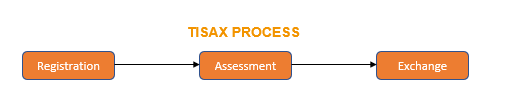

TISAX is an assessment and exchange mechanism for the information security of enterprises and allows recognition of assessment results among the participants. If you want to process sensitive information from your customers or evaluate the information security of your own suppliers, TISAX supports you in reducing efforts.
Registration:-
Gather information about your company and what needs to be part of the assessment.Assessment:-
You go through the assessment(s), which are conducted by TISAX audit providers.Exchange :-
You share your assessment result with your partner.The ISA uses the concept of “maturity levels” to rate the quality of all aspects of your information security management system
conformity to the requirements is called a finding. TISAX differentiates four types of findings: